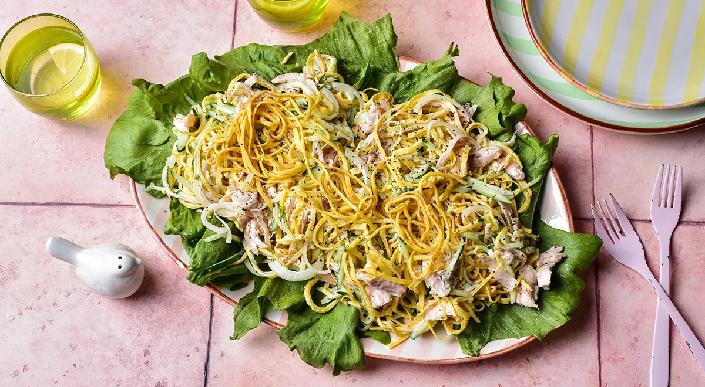

Салат блинный с огурцом и курицей

Возможно, что салат блинный с огурцом и курицей, был придуман
экспромтом, как и салат цезарь, из того, что осталось в
холодильнике. А в результате этот экспромт стал весьма популярным.
Доступные продукты, относительно низкая калорийность, быстрота
приготовления, изысканный вкус ‒ вот слагаемые успеха. Его можно
приготовить вместо ужина в будний день, или подать к праздничному
столу, украсив свежей зеленью. Изюминка салата ‒ яичные блинчики,
нарезанные соломкой. Блинной соломкой, красиво выложенной, можно
также и украсить эту закуску. Скажем по секрету, это еще и хороший
способ найти применение кусочкам запеченной курицы, оставшейся после
праздников.